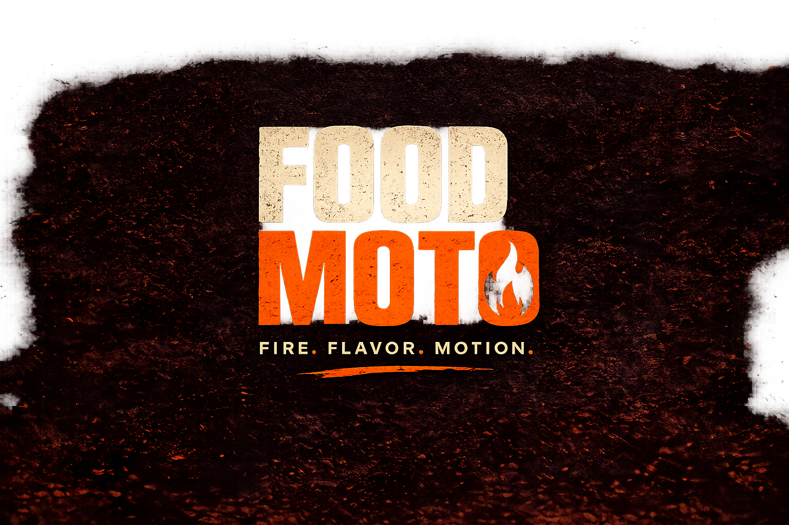
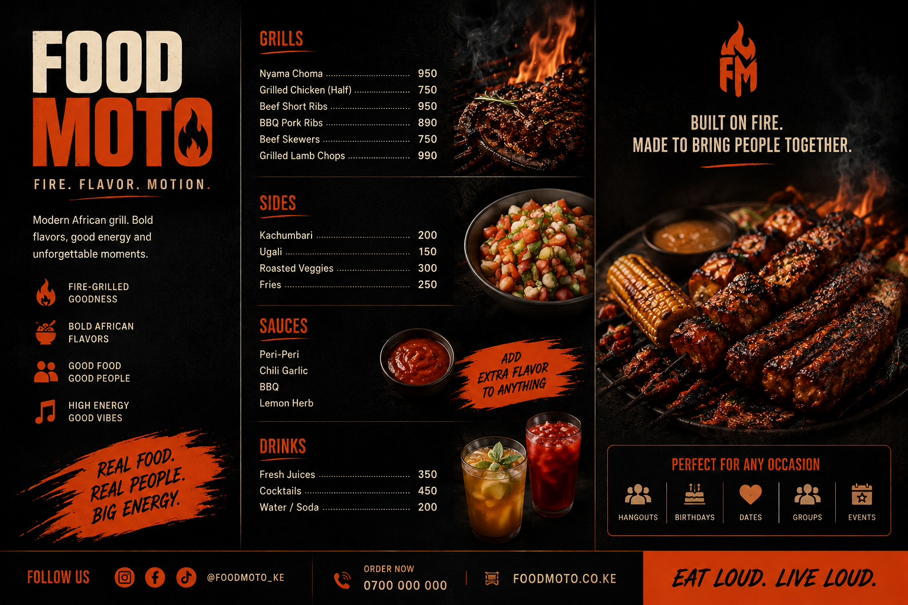

FOOD MOTO
FIRE. FLAVOR. MOTION.
A vibrant modern African grill concept built around Kenyan food culture, bold flavor and good energy.

Nairobi energy, served hot.
FOOD MOTO is a contemporary Nairobi grill concept celebrating the fire, flavor and energy of Kenyan food culture.
The brand is designed for people who come together for great food, good conversation and an experience worth remembering.
FIRE. FLAVOR. MOTION.
The identity takes inspiration from the energy of the grill — heat, smoke, movement, bold flavors and the social atmosphere surrounding good food.
Bold enough to be remembered.
The visual identity combines expressive typography, bright color and movement inspired by Nairobi's contemporary food and street culture.

Bright. Bold. Full of energy.
The palette moves away from predictable dark restaurant branding and uses vibrant orange, sun yellow, fresh green, coral and warm cream.
Real food. Real people. Big energy.
Photography focuses on the sensory experience of Nairobi's grill culture: fire, smoke, texture, color and people sharing food together.

From the grill to the street.
The identity is designed to work beyond the logo — across menus, takeaway packaging, signage, staff clothing, social media and the restaurant space.
FIRE. FLAVOR. MOTION.
A Nairobi grill concept made for bold food and good company.